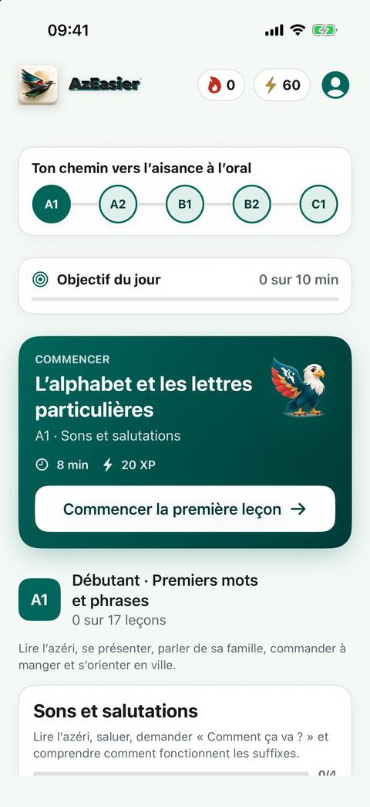
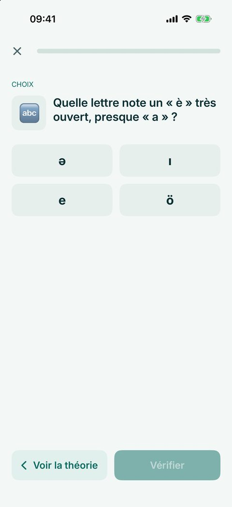
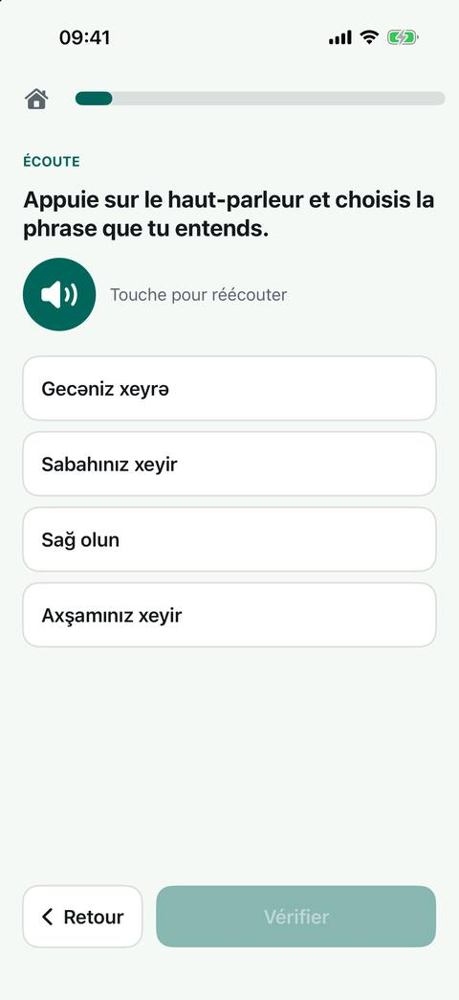

Apprendre l’azéri pas à pas
Du premier « Salam » à la conversation : des leçons courtes avec des explications claires en français, en anglais ou en russe, et un entraînement quotidien.

Le niveau A1 est gratuit. Vous pouvez commencer sans créer de compte.



90 leçons, de A1 à C1
A1 gratuit, Premium pour les niveaux suivants.
Écoutez, même hors ligne
Leçons et voix de synthèse disponibles sans connexion.
Dans votre langue
Français, anglais ou russe, avec un tuteur IA.
Derrière AzEasier
Bonjour, je suis Fariz Babayev. Avec Finalingua, je développe AzEasier pour rendre l’apprentissage de l’azéri plus accessible. Une question ou une idée ? Écrivez-nous.
Fariz Babayev · Finalingua · Nous écrire
Bon à savoir
- L’audio est de la voix de synthèse, pas l’enregistrement d’une personne.
- Le tuteur IA peut se tromper : les leçons restent la source principale. Les messages envoyés au tuteur ne sont traités qu’avec votre accord.
- Les explications en français et en anglais sont récentes et n’ont pas encore été relues par des locuteurs natifs. Si une phrase vous semble peu naturelle, dites-le-nous depuis le formulaire de retour de l’application.
- Pas de publicité ni de traceurs tiers. Les statistiques d’usage ne sont collectées qu’avec votre accord.
- Un compte est nécessaire pour la synchronisation, le tuteur IA et la gestion de l’abonnement ; le niveau A1 fonctionne sans compte.
Assistance et questions fréquentes
Écrivez-nous: contact@finalingua.com
Plus simple encore, depuis l’application : Profil → retour (nous répondons là-bas et par e-mail).
Faut-il un compte ?
Non. « Essayer sans inscription » ouvre le niveau A1 ; la progression reste sur l’appareil. Un compte sert à enregistrer la progression sur le serveur, utiliser le tuteur IA et gérer l’abonnement.
Comment supprimer mon compte et mes données ?
Dans l’application : Profil → Supprimer le compte. Tout est supprimé immédiatement et définitivement.
Est-ce que cela fonctionne hors ligne ?
Oui : les leçons, les exercices et l’audio fonctionnent hors ligne. Une connexion sert à se connecter, synchroniser et utiliser le tuteur IA.
Comment changer la voix ?
Profil → Voix de lecture : Banu (féminine) ou Babek (masculine).
Comment signaler une erreur ou donner mon avis ?
Dans l’application : Profil → retour (idée, erreur, autre, note de 1 à 5). Une erreur dans un exercice se signale depuis l’exercice lui-même. Pour noter l’application sur l’App Store : Profil → « Noter AzEasier ». La réponse du développeur arrive dans l’application et par e-mail.
Comment couper les e-mails et les statistiques ?
Les rappels et les nouveautés ne sont envoyés qu’à ceux qui l’ont accepté ; désabonnement par le lien de l’e-mail ou par l’interrupteur du Profil. Les statistiques d’usage et les diagnostics ne sont collectés qu’avec votre accord (demandé après la première connexion) ; retirez-le dans Profil → « Statistiques d’utilisation » et les événements enregistrés sont effacés.